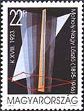

|
 |
|
| K XVIII, 1923 | |
| de Làszlò Moholy - Nagy | |

Une page de Dr. Claude Wainstain, France
K XVIII,
1923
Quand,
en 1923, la direction du Bauhaus décida d'engager un nouveau professeur,
elle fit appel à Moholy-Nagy, un jeune Hongrois récemment arrivé de
Budapest, qui jouissait déjà d'un certain renom pour ses compositions
abstraites et ses écrits théoriques. Les conséquences de ce choix
furent décisives. Moholy-Nagy modifia complètement l'esprit de la
célèbre école de Weimar, en y introduisant la rigueur industrielle et
l'abstraction géométrique qu'il tenait des constructivistes russes.
Il avait découvert la peinture à Odessa, en
1917, où il se remettait d'une grave blessure de guerre, et de sage
étudiant en droit issu d'une bonne famille juive, il s'était soudain
mué en artiste d'avant-garde, avec pour toile de fond l'exaltation des
journées révolutionnaires. Autodidacte aux multiples talents, sorte de
Mahler prolétarien à la tenue d'ouvrier et aux lunettes cerclées de fer,
Moholy-Nagy savait tout faire: constructions, collages, typographie,
conception artistique, "tout", ironisaient ses élèves, "sauf
parler allemand sans accent".
Il bricolait d'étranges échafaudages de
verre, de bois et de métal, traversés par des faisceaux lumineux
mobiles, et les intitulait "Modulateurs d'espace", comme celui
qui figure sur un timbre allemand émis le 8 février 1983. Il se
passionnait aussi pour la photographie expérimentale, inventait de
nouveaux caractères d'imprimerie, et déclamait, devant ses élèves
médusés : "La lumière, la lumière totale engendrera l'homme total
! ".
En 1934, Moholy-Nagy dut quitter
l'Allemagne et, après deux ans d'errance, il s'établit définitivement
à Chicago, où il dirigea le "New Bauhaus" puis
l'"Institute of Design". Lui que les nazis traitaient de "Judéo-bolchévik",
passait aux yeux des communistes pour un "dogmatique" "soumis
à l'économie capitaliste" . Il a donc fallu le dégel culturel de
ces dernières années pour qu'une des compositions, la "K-XVIII",
apparaisse sur ce timbre hongrois du 18 septembre 1995.
Peu de gens savent à quel point cet
artiste a influencé notre vie quotidienne, et que nous lui devons, avec
nos lampes de bureau flexibles et le design de nos cafetières chromées,
l'élégante typographie qui donne son côté chic à ce magazine.
"Moholy-Nagy", c'était aussi une boutique, galerie Vivienne, à
Paris, où, tout récemmentencore, le petit-fils du maître du Bauhaus
vendait de la belle chemise. "Enfin", auraient dit ses ancêtres,
"enfin un vrai métier pour un Juif ! ". Claude Wainstain.
Chronique publiée dans L’Arche, avril 1996
Link: